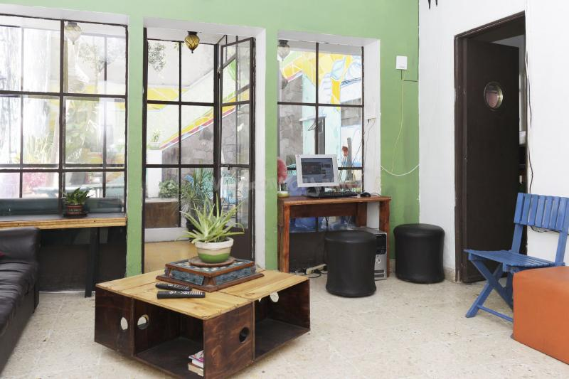
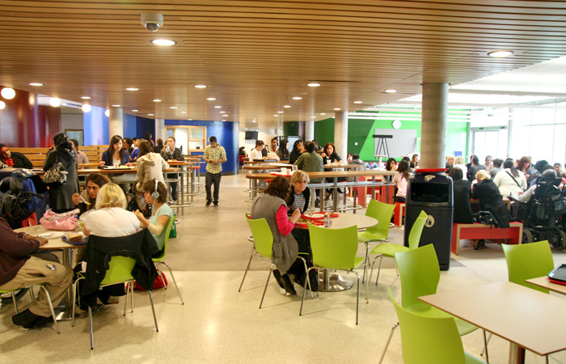

Introduction
In 2012 The National Assessment and Accreditation Council gave the university a grade of 3.9 out of 4, the highest grade awarded to any educational institution in the country.The university is ranked second among the public universities in India, as published by India Today magazine.

HOSTEL FACILITIES
There are ten hostels and a few flats for men and two hostels for women. The total capacity of all the hostels and flats, currently available, is about 5000. Apart from the mess in every hostel a mini canteen is also available in the hostel premises. STD/ISD facilities are available in almost all hostels. Students (except first year) are permitted .

MESS FACILITIES
All messes has a massive collection of recipes that are submitted, rated and reviewed by people who are passionate about food.Mess is good.Mess is good.Mess is good.Mess is good.Mess is good.Mess is good.
Mess is good.
LIBRARY FACILITIES | GIM FACILITIES | SPORTS | SWIMMING POOL
The university is known to have a long tradition of alumni who now occupy important political and bureaucratic positions (see Prominent alumni). This is in part due to the strong prevalence of Left-Centric student politics and the existence of a written constitution for the university to which noted Communist Party leader Prakash Karat contributed exhaustively during his education at KTU. However, on 24 October 2008 the Supreme Court of India stayed the KTU elections and banned the KTUSU for not complying with the recommendations of the Lyngdoh committee. After a prolonged struggle and multi-party negotiations, the ban was lifted on 8 December 2011. After a gap of more than four years, interim elections were scheduled again on 1 March 2012. Following the election results declared on 3 March 2012, AISA candidates won all four central panel seats and Sucheta De, the president of AISA became the president of KTUSU.